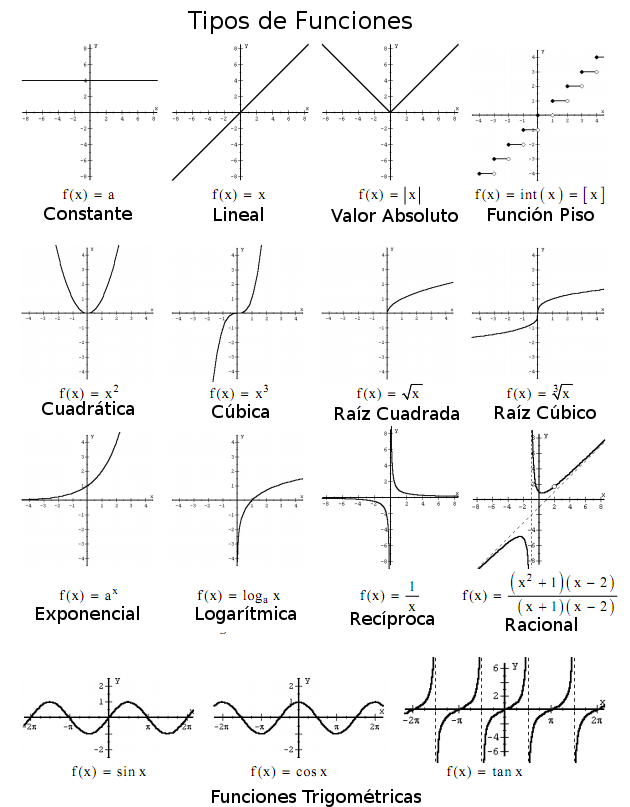

Bienvenidos a la seccion matematicas
seleccione aqui los temas que nesecita entender o aprender
algebra Sistemas de ecuacionees lineales Factorizacion funciones ecuacion de linea recta funciones cuadraticas ecuaciones generales Razones trigonometricas¿Que es el algebra?
El álgebra es la rama de la matemática que estudia la combinación de elementos de estructuras abstractas acorde a ciertas reglas.Originalmente esos elementos podían ser interpretados como números o cantidades, por lo que el álgebra en cierto modo fue originalmente una generalización y extensión de la aritmética.
Consiste en que los números se emplean para representar cantidades conocidas y determinadas. Las letras se emplean para representar toda clase de cantidades, ya sean conocidas o desconocidas. Las cantidades conocidas se expresan por las primeras letras del alfabeto: a, b, c, d, … Las cantidades desconocidas se representan por las últimas letras del alfabeto: u, v, w, x, y, z.16 Los signos empleados en álgebra son tres clases: Signos de operación, signos de relación y signos de agrupación.
fuentes: https://es.wikipedia.org/wiki/%C3%81lgebraAqui algunos videos:
Conceptos importantes del algebra
para comprender el algebra no solo nesecitamos saber su concepto general, sino tambien algunos de sus subtemas mas relevantes
1.Expresiones algebraicas: Son combinaciones de constantes, variables y operaciones algebraicas como suma, resta, multiplicación, división y potenciación. Por ejemplo, "2x+3y" y "x^3-4" son expresiones algebraicas.
2.Ecuaciones y desigualdades: Son declaraciones matemáticas que establecen una igualdad o desigualdad entre dos expresiones algebraicas. Por ejemplo, 2x+5=11 es una ecuación, mientras que "3x<9" es una desigualdad.
3.Sistemas de ecuaciones: Son conjuntos de dos o más ecuaciones que comparten las mismas incógnitas. Resolver un sistema de ecuaciones implica encontrar los valores de las incógnitas que satisfacen todas las ecuaciones simultáneamente.
4.Polinomios: Son expresiones algebraicas que constan de una suma de términos, donde cada término es el producto de una constante (coeficiente) y una variable elevada a una potencia entera no negativa. Por ejemplo, "2x^2+3x-5 es un polinomio.
5.Factorización: Es el proceso de expresar una expresión algebraica como el producto de factores. Se utiliza para simplificar expresiones y resolver ecuaciones.
Metodo de igualacion:El método de igualación es una técnica utilizada para resolver sistemas de ecuaciones lineales. Este método se basa en igualar dos de las expresiones de las incógnitas en las diferentes ecuaciones del sistema y luego resolver la ecuación resultante para encontrar el valor de una de las incógnitas. Posteriormente, se sustituye este valor en una de las ecuaciones originales para determinar el valor de la otra incógnita.
Los pasos para aplicar el método de igualación son los siguientes:
1.Funciones: Relaciones entre conjuntos que asignan a cada elemento de un conjunto (dominio) exactamente un elemento de otro conjunto (rango). Las funciones algebraicas se expresan usualmente mediante ecuaciones que contienen variables y operaciones algebraicas.
2.Inecuaciones: Son declaraciones matemáticas que establecen una relación de orden entre dos expresiones algebraicas. Por ejemplo, 3x>6 es una inecuación
3.Exponentes y radicales: Los exponentes indican cuántas veces se multiplica una base consigo misma, mientras que los radicales son la operación inversa a la potenciación. Por ejemplo, x^3 representa x multiplicado por sí mismo tres veces, y √x representa la raíz cuadrada de x
4.Sistemas de inecuaciones: Al igual que los sistemas de ecuaciones, los sistemas de inecuaciones son conjuntos de dos o más inecuaciones que comparten las mismas incógnitas.
5.Intercepto y pendiente: En el contexto de funciones lineales, el intercepto es el punto donde la gráfica de la función intersecta el eje y, mientras que la pendiente indica la inclinación de la recta.
para comprender el algebra no solo nesecitamos saber su concepto general, sino tambien algunos de sus subtemas mas relevantes
1.Expresiones algebraicas: Son combinaciones de constantes, variables y operaciones algebraicas como suma, resta, multiplicación, división y potenciación. Por ejemplo, "2x+3y" y "x^3-4" son expresiones algebraicas.
2.Ecuaciones y desigualdades: Son declaraciones matemáticas que establecen una igualdad o desigualdad entre dos expresiones algebraicas. Por ejemplo, 2x+5=11 es una ecuación, mientras que "3x<9" es una desigualdad.
3.Sistemas de ecuaciones: Son conjuntos de dos o más ecuaciones que comparten las mismas incógnitas. Resolver un sistema de ecuaciones implica encontrar los valores de las incógnitas que satisfacen todas las ecuaciones simultáneamente.
4.Polinomios: Son expresiones algebraicas que constan de una suma de términos, donde cada término es el producto de una constante (coeficiente) y una variable elevada a una potencia entera no negativa. Por ejemplo, "2x^2+3x-5 es un polinomio.
5.Factorización: Es el proceso de expresar una expresión algebraica como el producto de factores. Se utiliza para simplificar expresiones y resolver ecuaciones.
video de introduccion:
Sistema de ecuaciones lineales
Un sistema de ecuaciones es un conjunto de ecuaciones con las mismas incógnitas. Un sistema de ecuaciones lineales es un sistema de ecuaciones en el que cada ecuación es lineal. Una solución de un sistema es una asignación de valores para las incógnitas que haceverdadera cada una de las ecuaciones. Resolver un sistema signifi ca hallar todas las soluciones del sistema. En matemáticas y álgebra lineal, un sistema algebraico de ecuaciones lineales, también conocido como sistema lineal de ecuaciones o simplemente sistema lineal, es un sistema de ecuaciones en donde cada ecuación es de primer grado, definidas sobre un cuerpo. Un ejemplo de sistema lineal de ecuaciones sería el siguiente: El problema consiste en encontrar los valores desconocidos de las variables x1, x2 y x3 que satisfacen las tres ecuaciones; los sistemas lineales de ecuaciones es uno de los más antiguos de la matemática y tiene una infinidad de aplicaciones, como en procesamiento digital de señales, análisis estructural, estimación, predicción y más generalmente en programación lineal, así como en la aproximación de problemas no lineales de análisis numérico.
Metodo de sustitucion:El método de sustitución consiste en despejar en una de las ecuaciones con cualquier incógnita, preferiblemente la que tenga menor coeficiente y a continuación sustituirla en otra ecuación por su valor.
Para resolver un sistema de ecuaciones utilizando el método de sustitución, procedemos de la siguiente manera:
1.Se despeja una variable en una de las ecuaciones.
2.Se sustituye la expresión de esta variable en la otra ecuación, obteniendo así una ecuación con una sola variable.
3.Se resuelve esta ecuación.
4.El valor obtenido se sustituye en la ecuación original donde se despejó la variable.
5.Los dos valores obtenidos conforman la solución del sistema.
Metodo de reduccion:El método de reducción, también conocido como método de eliminación, es una técnica utilizada para resolver sistemas de ecuaciones lineales. Este método se basa en la idea de eliminar una de las incógnitas al sumar o restar las ecuaciones del sistema de tal manera que una de las incógnitas desaparezca, lo que nos permite resolver el sistema con una sola variable.
El método de reducción para resolver un sistema de ecuaciones lineales implica seguir estos pasos:
1.Se multiplican una o ambas ecuaciones por algún factor adecuado para hacer que los coeficientes de una de las incógnitas sean iguales en valor absoluto pero de signos opuestos.
2.Se suman o restan las ecuaciones obtenidas en el paso anterior para eliminar una de las incógnitas y obtener una nueva ecuación con una sola incógnita.
3.Se resuelve esta nueva ecuación para hallar el valor de una de las incógnitas.
4.Se sustituye el valor encontrado en una de las ecuaciones originales para hallar el valor de la otra incógnita.
5.Los valores obtenidos para las incógnitas forman la solución del sistema.
Metodo de igualacion:El método de igualación es una técnica utilizada para resolver sistemas de ecuaciones lineales. Este método se basa en igualar dos de las expresiones de las incógnitas en las diferentes ecuaciones del sistema y luego resolver la ecuación resultante para encontrar el valor de una de las incógnitas. Posteriormente, se sustituye este valor en una de las ecuaciones originales para determinar el valor de la otra incógnita.
Los pasos para aplicar el método de igualación son los siguientes:
1.Identificar dos ecuaciones del sistema y seleccionar una de las incógnitas para igualar.
2.Igualar las expresiones de dicha incógnita en ambas ecuaciones.
3.Resolver la ecuación resultante para encontrar el valor de la incógnita seleccionada.
4.Sustituir este valor en una de las ecuaciones originales para hallar el valor de la otra incógnita.
5.Verificar la solución encontrada, sustituyendo los valores obtenidos en todas las ecuaciones del sistema.
Factorizacion
En el ámbito de las matemáticas, la factorización se refiere a la técnica de descomponer una expresión algebraica, que puede ser un número, una suma o resta, una matriz o un polinomio, en forma de un producto de factores. La finalidad de la factorización es simplificar la expresión o expresarla en términos de componentes fundamentales, conocidos como factores. Estos factores pueden ser números primos en el caso de números enteros o polinomios irreducibles en el caso de polinomios.
Caso de una variable, usando propiedades de las raíces: Cuando el polinomio de una variable es completamente factorizado en factores lineales (factores de un grado), todas las raíces del polinomio son visibles y multiplicando los factores juntos de nuevo, se puede observar la relación entre las raíces y los coeficientes. Formalmente, estas relaciones se conocen como fórmulas de Viète. Estas fórmulas no ayudan a factorizar el polinomio excepto como una guía para hacer buenas conjeturas que sean en las posibles raíces. Sin embargo, si se conoce alguna información adicional acerca de las raíces, esto se puede combinar con las fórmulas para obtener las raíces y por lo tanto la factorización.
Por ejemplo,podemos factorizar x^3-5x^2-16x+80 si sabemos que la suma de dos de sus raíces es cero. Deja que r1,r2 y r3 sean las tres ráices de este polinomio. A continuación, las fórmulas de Viète son:
r1 + r2 + r3 = 5
r1.r2 + r2.r3 + r3.r1 = -16
r1.r2.r3 = -80
Asumiendo que r2 + r3 = 0 inmediatamente da r1 = 5 y reduce las otras dos ecuaciones a r2^2 = 16 .De este modo las raíces son 5, 4 y -4 y tenemos x^2 + 5x^2 -16x + 80 = (x-5)(x-4)(x+4).
https://es.wikipedia.org/wiki/%C3%81lgebraAqui algunos videos:
Metodo de reduccion:El método de reducción, también conocido como método de eliminación, es una técnica utilizada para resolver sistemas de ecuaciones lineales. Este método se basa en la idea de eliminar una de las incógnitas al sumar o restar las ecuaciones del sistema de tal manera que una de las incógnitas desaparezca, lo que nos permite resolver el sistema con una sola variable.
El método de reducción para resolver un sistema de ecuaciones lineales implica seguir estos pasos:
1.Se multiplican una o ambas ecuaciones por algún factor adecuado para hacer que los coeficientes de una de las incógnitas sean iguales en valor absoluto pero de signos opuestos.
2.Se suman o restan las ecuaciones obtenidas en el paso anterior para eliminar una de las incógnitas y obtener una nueva ecuación con una sola incógnita.
3.Se resuelve esta nueva ecuación para hallar el valor de una de las incógnitas.
4.Se sustituye el valor encontrado en una de las ecuaciones originales para hallar el valor de la otra incógnita.
5.Los valores obtenidos para las incógnitas forman la solución del sistema.
casos de factorizacion:los casos de factorización son diferentes situaciones o patrones que se presentan en expresiones algebraicas y que permiten factorizarlas de manera más eficiente.
pasos para aplicar la Factorización por factor común:
1.Identifica un factor que aparezca en todos los términos de la expresión..
2.Extrae ese factor común fuera de paréntesis.
3.Divide cada término de la expresión original por el factor común.
4.Escribe el factor común fuera de paréntesis y los términos restantes dentro de paréntesis.
5.Por ejemplo, en la expresión 2x + 4 el factor común es 2.Entonces factorizamos 2 como factor comun: 2(x + 2).
Funciones:
Una función es una relación entre dos conjuntos de elementos en los que a cada elemento del primer conjunto (llamado dominio) le corresponde exactamente un elemento del segundo conjunto (llamado codominio). En términos más simples, una función asigna a cada elemento de un conjunto de entrada (dominio) un único elemento de un conjunto de salida (codominio). Esto significa que para cada valor de entrada, hay un único valor de salida.
Funciones polinómicas: Las funciones polinómicas, en ocasiones entendidas como sinónimas de las algebraicas y en otras como una subclase de estas, integran el conjunto de tipos de funciones matemáticas en las que para obtener la relación entre dominio y codominio es necesario realizar diversas operaciones con polinomios de diverso grado.
Dentro de ellas podemos encontrar las funciones identidad, en las que directamente se da una identificación entre dominio y codominio de tal manera que ambos valores son siempre el mismo (y=x), las funciones lineales (en que únicamente observamos una variación de la pendiente, y=mx) y las funciones afines (en que podemos encontrar alteraciones en el punto de corte del eje de abscisas y la pendiente, y=mx+a).
Funciones racionales: Se denominan como funciones racionales al conjunto de funciones en las que el valor de la función se establece a partir de un cociente entre polinomios diferentes de cero. En dichas funciones el dominio incluirá todos los números excepto los que anulen el denominador de la división, los cuales no permitirían obtener un valor y.
En este tipo de funciones aparecen límites conocidos como asíntotas, los cuales precisamente serían aquellos valores en los que no habría un valor de dominio o codominio (es decir cuando y o x son igual a 0). En dichos límites, las representaciones gráficas tienden a infinito, sin tocar jamás dichos límites. Un ejemplo de este tipo de función: y= √ ax.
Funciones racionales: Reciben el nombre de funciones irracionales el conjunto de funciones en las cuales una función racional aparece introducida dentro de un radical o raíz (que no tiene porqué ser cuadrada, ya que es posible que sea cúbica o con otro exponente).
Para poder resolverla habrá que tener en cuenta que la existencia de dicha raíz nos impone ciertas restricciones, como por ejemplo el hecho de que los valores de x siempre van a tener que provocar que el resultado de la raíz sea positivo y mayor o igual a cero.
Funciones exponenciales: Tal y como indica su nombre, las funciones exponenciales son el conjunto de funciones que establecen una relación entre dominio y codominio en la que se establece una relación de crecimiento a nivel exponencial, es decir que existe un crecimiento cada vez más acelerado. el valor de x es el exponente, es decir la manera en que el valor de la función va variando y creciendo a lo largo del tiempo. El ejemplo más sencillo: y=ax
Funciones logarítmicas: El logaritmo de cualquier número es aquel exponente el cual será necesario elevar la base empleada con el fin obtener el número concreto. Así pues las funciones logarítmicas son aquellas en las que estamos empleando como dominio el número que se ha de obtener con con una base concreta. Se trata del caso opuesto e inverso de la función exponencial.
El valor de x ha de ser siempre superior a cero y distinta de 1 (ya que cualquier logaritmo con base 1 es igual a cero). El crecimiento de la función es cada vez menor según va aumentando el valor de x. En este caso y=log(a) x
Funciones trigonométricas: Un tipo de función en el que se establece la relación numérica entre los diferentes elementos que configuran un triángulo o una figura geométrica, y concretamente las relaciones que existen entre los ángulos de una figura. Dentro de estas funciones encontramos el cálculo del seno, coseno, tangente, secante, cotangente y cosecante ante un valor x determinado.
Aquí los tipos de Funciones:
Ecuacion de linea recta:
La ecuación de una línea recta es una expresión matemática que describe todas las coordenadas (x,y) que pertenecen a una línea recta en el plano cartesiano. Hay varias formas de expresar la ecuación de una línea recta, pero una de las más comunes es la forma pendiente-intersección:y = mx+b
-la pendiente de la línea, que representa la inclinación de la línea es la m.
-la ordenada al origen, es decir, el valor de y cuando x = 0 . Indica el punto donde la línea corta el eje (y) esto se refire al valor de (b).
Otra forma común de expresar la ecuación de una línea recta es la forma punto-pendiente:
y - y1 = m(x - x1)
-m es la pendiente de la línea.
-(x1,y1) es un punto dado en la linea.
La ecuación de una línea recta nos permite describir y entender cómo se relacionan dos variables en un sistema. Nos ayuda a predecir comportamientos, modelar fenómenos y tomar decisiones en campos como la ciencia, la ingeniería, la economía y más. Es una herramienta fundamental para el análisis de datos y la resolución de problemas en diversas áreas.
Funciones cuadraticas:
Una función cuadrática es una función matemática que se expresa mediante una ecuación de la forma:
(x)= ax^2 + bx + c
donde a, b, y c son constantes, y a no puede ser cero. Esta función es de segundo grado, ya que el término de mayor grado es x^2. La gráfica de una función cuadrática es una parábola, que puede abrir hacia arriba si a es positivo o hacia abajo si a es negativo. Las funciones cuadráticas son importantes en matemáticas porque modelan una amplia gama de fenómenos en ciencias naturales y sociales, y se utilizan en diversas aplicaciones prácticas, como la física, la ingeniería, la economía y más.
Para resolver ecuaciones cuadráticas paso a paso, se deben seguir los siguientes pasos:
1.Identificar los coeficientes de la ecuación de segundo grado o cuadrática.
2.Calcular el discriminante.
3.Analizar el resultado de ese discriminante.
4.Usar la fórmula cuadrática para obtener las mencionadas soluciones.
Ecuaciones Generales:
Las "Ecuaciónes Generales" se refieren a las formas estándar o representaciónes matemáticas generales que pueden aplicarse a un conjunto amplio de ecuaciones. No hay una única definición de "ecuación general" porque puede variar dependiendo del contexto. Sin embargo, en matemáticas, la "ecuación general" podría referirse a una forma estándar de una ecuación que incluye todos los términos posibles, sin simplificaciones adicionales.
Por ejemplo, en el caso de una ecuación lineal en dos variables x e y, la forma general sería:
Ax + By + C = 0
donde A, B y C son constantes, y la ecuación puede representar cualquier línea en el plano cartesiano.
En el caso de una ecuación cuadrática en una variable x, la forma general sería:
ax^2 + bx + c = 0
donde a, b y c
Razones Trigonometricas:
Las razones trigonométricas son relaciones matemáticas que se utilizan para relacionar los ángulos de un triángulo rectángulo con las longitudes de sus lados. Hay seis razones trigonométricas principales, que son:
Seno (sin): El seno de un ángulo en un triángulo rectángulo es la longitud del lado opuesto al ángulo dividida por la longitud de la hipotenusa.
sin(θ)= longitud de la hipotenusa/longitud del lado opuesto.
Coseno (cos): El coseno de un ángulo en un triángulo rectángulo es la longitud del lado adyacente al ángulo dividida por la longitud de la hipotenusa.
cos(θ)= longitud de la hipotenusa/longitud del lado adyacente
Tangente (tan): La tangente de un ángulo en un triángulo rectángulo es la longitud del lado opuesto al ángulo dividida por la longitud del lado adyacente al ángulo.
tan(θ)= longitud del lado adyacente/longitud del lado opuesto
Cosecante (csc): La cosecante de un ángulo es la inversa del seno.
csc(θ)= sin(θ)/1
Secante (sec): La secante de un ángulo es la inversa del coseno.
sec(θ)= cos(θ)/1
Cotangente (cot): La cotangente de un ángulo es la inversa de la tangente.
cot(θ)= tan(θ)/1
Razones Trigonometricas:
Las razones trigonométricas son relaciones matemáticas que se utilizan para relacionar los ángulos de un triángulo rectángulo con las longitudes de sus lados. Hay seis razones trigonométricas principales, que son:
Por ejemplo, en el caso de una ecuación lineal en dos variables x e y, la forma general sería:
Ax + By + C = 0
donde A, B y C son constantes, y la ecuación puede representar cualquier línea en el plano cartesiano.
En el caso de una ecuación cuadrática en una variable x, la forma general sería:
ax^2 + bx + c = 0
donde a, b y c